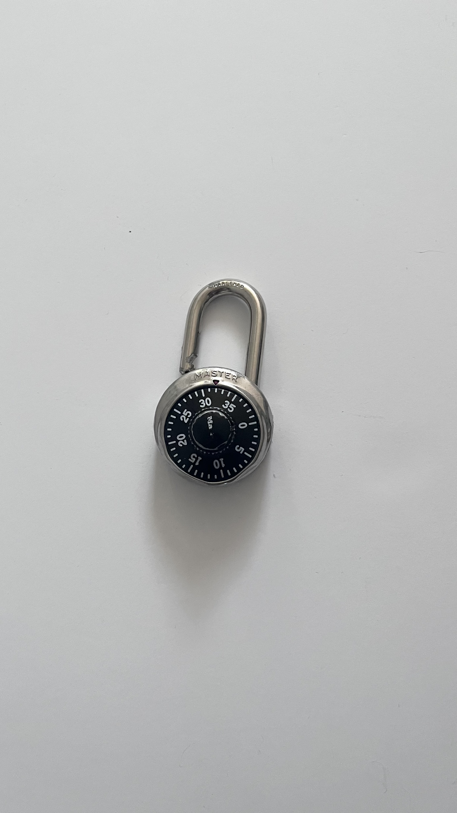

5-31-21

This is my lock from my high school locker. This isn’t the most exciting artifact, but it is practical, as I have continued to use it for eight years now.
On that first jarring day of school, learning how to dial the code to your lock is the first thing they urge you to do. The most universal experience for SACHS students is sitting in your homeroom with a knot in your stomach, toying with the lock and swinging it around when you successfully unlock it.
High school is the most pivotal point of adolescence and is what brings me here to Guelph. I held onto this lock because I like to think of it as part of a butterfly effect.
In high school, all of my friends knew the combination to this lock —even the people who left theirs unlocked because they didn’t know their own. This was a common occurrence: writing down your friend’s locker code in your notes app and going in and out of it like it was your own. Because sometimes, you needed Advil or a pad from your friend’s locker, but they couldn’t come out of class to give it to you.
I remember that sometimes, when I had the latter lunch and knew the cafeteria would be out of my favourite food by the time it was my turn to eat, I would ask my friends to buy me mac and cheese and leave it in my locker. Leaving things in people’s lockers was a love language.
My high school boyfriend would leave a sticky note in my locker every day, usually accompanied by chocolate milk or caf cookies (a declaration of love in itself).
On birthdays, you might have the outside of your locker decorated and a crowd of people waiting to sing happy birthday to you.
It was the place to meet your friends while skipping class, or an excuse to leave the gym because you “forgot something in your locker.”
I think I continue to keep this because it still works. It is a handy thing to have, and I use it sometimes still. But more than that, it is a physical reminder of the personal but shared space I inhabited for an important time in my life; it's like the keys to the old house you used to live in. 5-31-21 are numbers that I’ll remember forever, no matter how hard I could try to forget them-- that is high school in a nutshell.
Artifact Metadata
| Type | Description |
|---|---|
| Name | High school lock |
| Collection | Various |
| Origin | St.Augustine CHS |
| Date | September 2019 |
| Location | Markham, ON |
| Condition | Good |
| Colour | Silver and Black |
| Tags |
Master Lock Combination Padlock
I can still recall the exact muscle memory of opening this—the specific tension of the dial, the three precise turns, and the mechanical 'thunk' of the shackle releasing. For years, this was the gatekeeper of my private world, whether it was hanging on a gym locker or a school cubby.
I kept it long after I stopped needing the combination because it feels like a heavy, cold anchor to a different version of myself. Looking at that notch on the shackle reminds me of how many times I snapped it shut at the end of a day. It’s a silent, sturdy witness to all the things I wanted to keep safe, and even though it’s retired now, it still carries that feeling of responsibility and closure
Artifact Metadata
| Type | Description |
|---|---|
| Artifact ID | OBJ-H1-LOCK-01 |
| Title | Master Lock Combination Padlock |
| Category | Analog Technology / Personal Security |
| Physical Description | A classic rotary combination padlock. It features a stainless steel body with a black dial face and white numerical markings (0-39). The shackle is stamped with "HARDENED" at the top curve. The "MASTER" brand name is embossed above the dial. |
| Condition | Good/Used. There is a notable notch or wear mark on the left side of the shackle near the entry point, suggesting frequent use or a specific mechanical friction over time. The stainless steel body shows minor superficial scuffs. |